Visualization¶
popgames has two plotting entry points:
Simulator.plotplots the last simulation (sim.log).EnsembleResult.plotplots an ensemble of simulations, fromrun_ensemble()(finite agents) orintegrate_ensemble()(the deterministic approximation).
Both select the plot with plot_type:
Object |
|
What it shows |
|---|---|---|
|
|
A key performance indicator over time, by default the distance to the (G)NE |
|
\(\mathbf{x}(t)\) and \(\mathbf{p}(t)\) per population, and \(\mathbf{q}(t)\) |
|
|
One plot per entry of \(\mathbf{x}\), \(\mathbf{p}\), and \(\mathbf{q}\) |
|
|
The trajectory on the simplex (populations with 3 strategies), optionally over a potential |
|
|
|
Median and quantile bands (or mean and standard deviation bands) of the runs over time |
|
The same bands for a KPI |
|
|
The runs on the simplex (a phase portrait with several initial states) |
|
|
The distribution of the states at the final (or a given) time |
All plot types share these options:
Option |
Effect |
|---|---|
|
Overlay the deterministic approximation (EDM-PDM) as dotted lines |
|
Save the figure(s); see Saving figures for the file names |
|
Size of each figure and of its text |
|
Show the figure(s) (default), or close them after saving |
|
Draw on existing |
|
Draw the legend (default), or leave it out, e.g., for one legend shared by several plots |
The examples below use the Prisoner’s Dilemma (PD) and Rock-Paper-Scissors (RPS) games of the
usage examples. They save each figure (filename=..., show=False, or save(fig, ...)
for composed figures); in a notebook, simply leave these arguments out. All the code is in
docs/examples/visualization_gallery.py,
which produces every figure of this page.
import os
import sys
import matplotlib.pyplot as plt
import numpy as np
import popgames as pg
from popgames.plotting import add_shared_legend
from popgames.revision_protocol import Replicator, Smith, Softmax
from popgames.utilities import sample_initial_states
OUT_DIR = sys.argv[1] if len(sys.argv) > 1 else "_static/visualization"
os.makedirs(OUT_DIR, exist_ok=True)
def out(name):
"""Path of an output figure."""
return os.path.join(OUT_DIR, name)
def save(fig, name):
"""Save a figure composed with ``ax=...`` and close it."""
fig.savefig(out(name), dpi=150, bbox_inches="tight")
plt.close(fig)
# Prisoner's dilemma: strategy 1 = cooperate, strategy 2 = defect (T > R > P > S)
T, R, P, S = 3.0, 2.0, 1.0, 0.0
A_pd = np.array([[R, S], [T, P]])
def fitness_pd(x):
return A_pd @ x
pd_game = pg.SinglePopulationGame(num_strategies=2, fitness_function=fitness_pd)
pd_payoffs = pg.PayoffMechanism(h_map=fitness_pd, n=2)
# Rock-Paper-Scissors: unique NE at (1/3, 1/3, 1/3)
A_rps = np.array([[0, -1, 1], [1, 0, -1], [-1, 1, 0]], dtype=float)
def fitness_rps(x):
return A_rps @ x
rps_game = pg.SinglePopulationGame(num_strategies=3, fitness_function=fitness_rps)
rps_payoffs = pg.PayoffMechanism(h_map=fitness_rps, n=3)
def make_simulator(game, payoffs, protocol, num_agents):
return pg.Simulator(
population_game=game,
payoff_mechanism=payoffs,
revision_processes=pg.PoissonRevisionProcess(
Poisson_clock_rate=1, revision_protocol=protocol
),
num_agents=num_agents,
)
Single simulations¶
Trajectories over time¶
"univariate" plots \(\mathbf{x}(t)\) and \(\mathbf{p}(t)\) (one figure per population), and \(\mathbf{q}(t)\) if the
payoff mechanism has a state. In the PD, defection is dominant, so the population moves to “everyone defects” (with
the logit protocol, a few agents keep cooperating).
sim_pd = make_simulator(pd_game, pd_payoffs, Softmax(0.1), num_agents=1000)
sim_pd.reset(x0=np.array([[0.5], [0.5]]), seed=0)
sim_pd.run(T_sim=30)
# x(t) and p(t), with the deterministic approximation (EDM-PDM) as dotted lines
sim_pd.plot(
plot_type="univariate",
plot_deterministic_approximation=True,
filename=out("pd_univariate.png"), # saved as pd_univariate_x_1.png and pd_univariate_p_1.png
show=False,
)
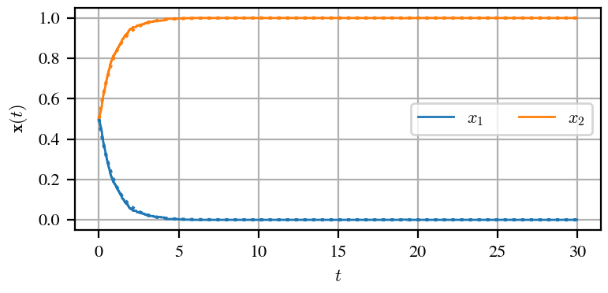
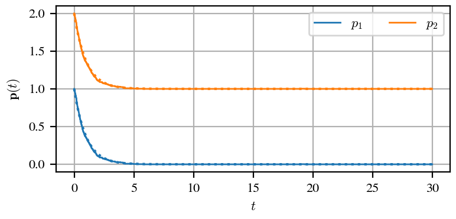
The options xlim, ylim, xscale, and yscale take one value per variable, e.g.,
ylim={"x": (0, 1)}.
Key performance indicators¶
"kpi" plots a scalar function of the simulation over time. By default, it is the Euclidean distance to the
(G)NE, normalized by its initial value; kpi_function maps the log (fields t, x, q, p) to any other
KPI, of shape (K,).
# Default KPI: distance to the Nash equilibrium, normalized by its initial value
sim_pd.plot(
plot_type="kpi",
plot_deterministic_approximation=True,
filename=out("pd_kpi.png"),
show=False,
)
# Any KPI: here, the average payoff x^T p of the population (log scale)
sim_pd.plot(
plot_type="kpi",
kpi_function=lambda log: np.sum(log.x * log.p, axis=0),
yscale="log",
filename=out("pd_kpi_average_payoff.png"),
show=False,
)
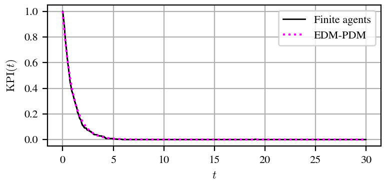
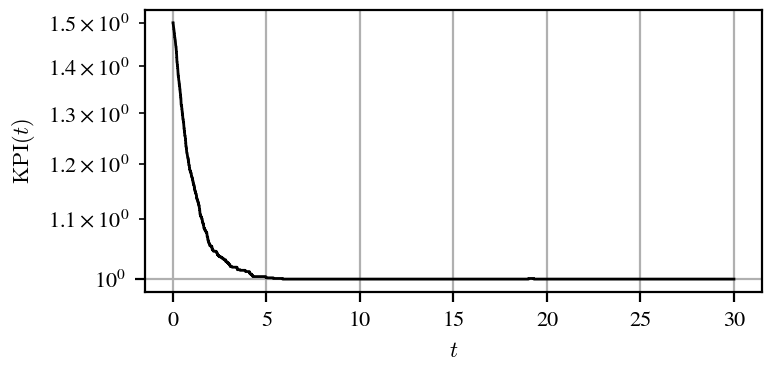
Ternary plots¶
For populations with 3 strategies, "ternary" plots the trajectory on the simplex, with the (G)NE (if one is
found) and, for constrained games, the feasible region. Under the Smith protocol, the RPS population spirals to the
NE.
sim_rps = make_simulator(rps_game, rps_payoffs, Smith(scale=0.25), num_agents=500)
sim_rps.reset(x0=np.array([[0.5], [0.3], [0.2]]), seed=0)
sim_rps.run(T_sim=60)
sim_rps.plot(
plot_type="ternary",
plot_deterministic_approximation=True,
filename=out("rps_ternary.png"),
show=False,
)

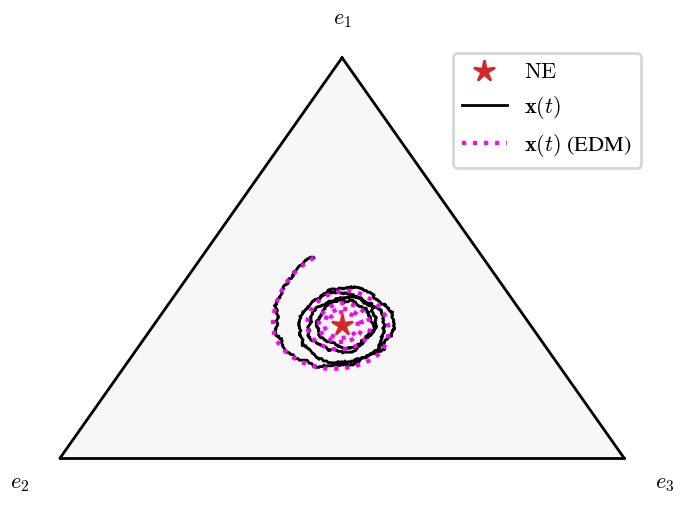
For potential games, potential_function (mapping \(\mathbf{x}\) of shape (n, 1) to a (1, 1) array) is
drawn as a heatmap (scale sets its resolution). The RPS game has no potential, so this example uses a
coordination game, \(f_i(\mathbf{x}) = a_i x_i\), with potential \(\sum_i a_i x_i^2 / 2\): the population climbs the
potential to the equilibrium \(\mathbf{e}_3\).
# Coordination game f_i(x) = a_i x_i, a potential game with potential sum_i a_i x_i^2 / 2
a = np.array([[1.0], [2.0], [3.0]])
coord_game = pg.SinglePopulationGame(num_strategies=3, fitness_function=lambda x: a * x)
sim_coord = make_simulator(
coord_game, pg.PayoffMechanism(h_map=lambda x: a * x, n=3), Smith(scale=0.5), 500
)
sim_coord.reset(x0=np.array([[0.45], [0.2], [0.35]]), seed=0)
sim_coord.run(T_sim=20)
sim_coord.plot(
plot_type="ternary",
potential_function=lambda x: np.array([[0.5 * float(np.sum(a * x**2))]]),
plot_deterministic_approximation=True,
filename=out("coordination_potential.png"),
show=False,
)

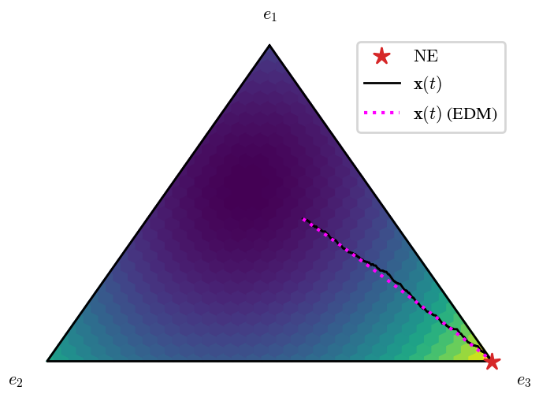
One plot per entry¶
"univariate_split" gives each entry of \(\mathbf{x}\), \(\mathbf{p}\), and \(\mathbf{q}\) its own plot, here drawn on
a grid of axes with one shared legend (see Composing figures).
# One panel per entry of x and p: x_1, x_2, x_3, then p_1, p_2, p_3, with one legend for all
fig, axes = plt.subplots(2, 3, figsize=(11, 4.5), sharex=True)
sim_rps.plot(
plot_type="univariate_split",
plot_deterministic_approximation=True,
legend=False,
ax=axes,
)
fig.tight_layout()
add_shared_legend(fig, loc="lower center", bbox_to_anchor=(0.5, 1.0))
save(fig, "rps_split.png")
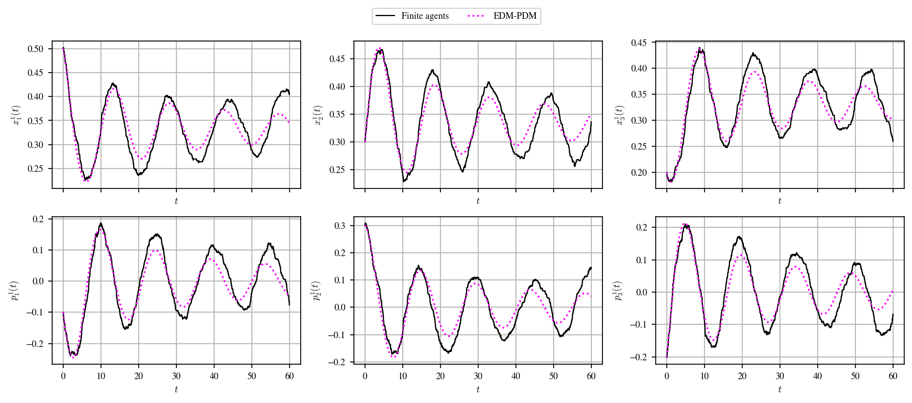
Reference lines¶
plot_gne=True draws the (G)NE as dashed lines on the plots of \(\mathbf{x}\), and reference draws any values
per variable (one per entry, or a scalar for all entries). Both work with "univariate", "univariate_split",
and the ensemble "bands".
# Reference values as dashed lines: the Nash equilibrium (plot_gne=True), or any values (reference={...})
fig, axes = plt.subplots(1, 2, figsize=(8, 2.5))
sim_rps.plot(plot_type="univariate", plot_gne=True, reference={"p": 0.0}, ax=axes)
save(fig, "rps_reference_lines.png")
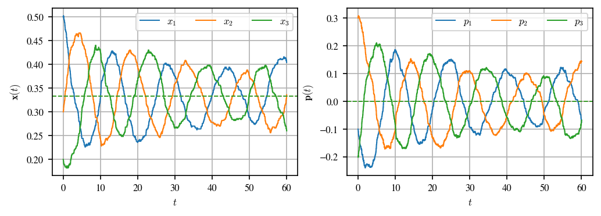
Composing figures¶
By default, each plot creates its own figure(s). With ax, it draws on existing axes instead, so several plots
can share one figure:
Pass one axes per panel the plot would otherwise create, in the order given in its documentation (e.g.,
xthenpfor"univariate"). A single axes is enough for a single panel, and arrays of axes fromplt.subplotsare taken row by row.The figure then belongs to you:
popgamesneither saves, shows, nor closes it, and leaves its layout alone. Combiningaxwithfilenameraises an error; save the figure instead.
With legend=False, a plot leaves its legend out, but keeps the entries: add_shared_legend()
collects them from all axes of the figure (each label once) into one legend.
# Several simulations in one figure, with one legend for all of them
fig, axes = plt.subplots(1, 2, figsize=(8, 3.2))
for ax, (name, protocol) in zip(
axes, [("Replicator", Replicator(scale=0.5)), ("Smith", Smith(scale=0.25))]
):
sim = make_simulator(rps_game, rps_payoffs, protocol, num_agents=500)
sim.reset(x0=np.array([[0.5], [0.3], [0.2]]), seed=0)
sim.run(T_sim=60)
sim.plot(plot_type="ternary", plot_deterministic_approximation=True, legend=False, ax=ax)
ax.set_title(name, pad=18)
fig.subplots_adjust(wspace=0.3) # the corner labels lie outside the axes
add_shared_legend(fig, loc="lower center", bbox_to_anchor=(0.5, -0.08))
save(fig, "rps_compose.png")

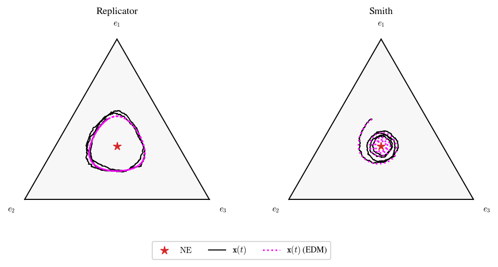
Ensembles¶
Ensembles show the variability of the finite-agent simulations (see the RPS ensemble example for a discussion).
sim_rps.reset(x0=np.array([[0.5], [0.3], [0.2]]))
ens = sim_rps.run_ensemble(T_sim=40, num_runs=40, seed=0) # 40 runs from the same initial state
Bands over time¶
"bands" shows, for each strategy, the median of the runs at each time (solid line) and the bands between the
quantiles in bands (by default, 90% and 50% of the runs). variables selects among x, p, and q.
# Median (solid) and bands containing 90% and 50% of the runs at each time
ens.plot(
plot_type="bands",
variables=["x"],
plot_deterministic_approximation=True,
filename=out("rps_bands.png"), # saved as rps_bands_x_1.png
show=False,
)

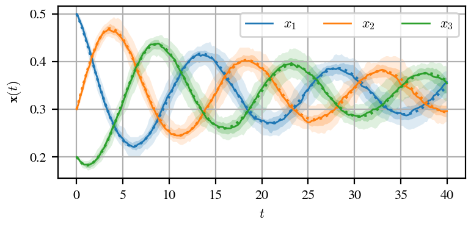
Its options control the statistics, the layout, the references, and the style:
Option |
Effect |
|---|---|
|
Mean and bands of \(\pm k\) standard deviations (\(k\) in |
|
One panel per strategy (in a grid of |
|
Reference lines (dashed, in the color of each strategy, unless |
|
Width of the central lines; opacity of the bands (one value, or one per band, widest first) |
|
Draw the central line (median or mean) |
|
Which runs the bands mix; see Several initial states |
|
Quantities derived from the state; see Derived quantities |
# Mean and +/- 1 and 2 standard deviations, one panel per strategy, the NE as reference,
# and the style of the lines and bands
fig, axes = plt.subplots(1, 3, figsize=(10, 2.5), sharey=True)
ens.plot(
plot_type="bands",
variables=["x"],
statistic="mean_std",
num_std=(1, 2),
layout="per_strategy",
plot_gne=True,
linewidth=1.6,
band_alpha=(0.15, 0.3),
reference_style={"color": "black", "linestyle": "dotted"},
ax=axes,
)
save(fig, "rps_bands_styled.png")
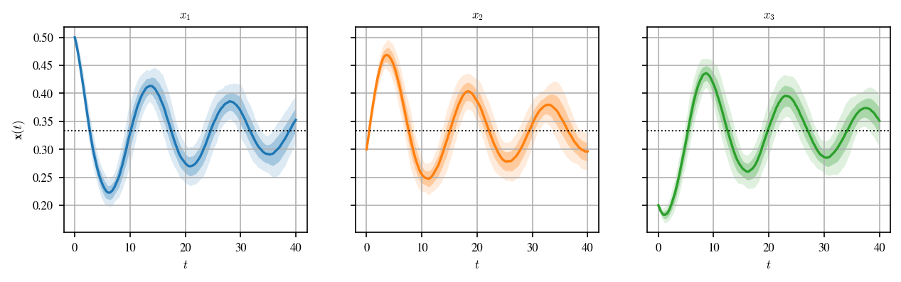
KPI¶
"kpi" shows the same bands for a KPI evaluated on each run (by default, the normalized distance to the (G)NE;
kpi_function maps a run to any other KPI). It accepts the same statistics and style options as "bands".
ens.plot(
plot_type="kpi",
plot_deterministic_approximation=True,
filename=out("rps_ensemble_kpi.png"),
show=False,
)

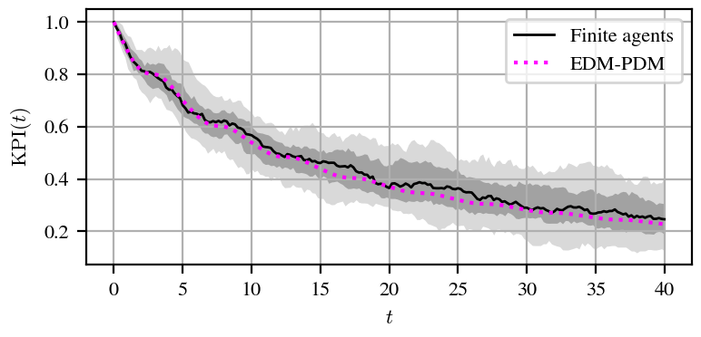
Runs on the simplex and final states¶
"ternary" draws the runs as semi-transparent lines (max_runs, alpha), optionally with their mean
(plot_mean). "final" shows where the runs are at the final time, or at time t: a scatter plot on the
simplex for populations with 3 strategies, and histograms (bins) otherwise.
fig, axes = plt.subplots(1, 2, figsize=(8, 3.2))
ens.plot(plot_type="ternary", plot_mean=True, plot_deterministic_approximation=True, ax=axes[0])
ens.plot(plot_type="final", plot_deterministic_approximation=True, ax=axes[1])
fig.subplots_adjust(wspace=0.4)
save(fig, "rps_ensemble_ternary_final.png")

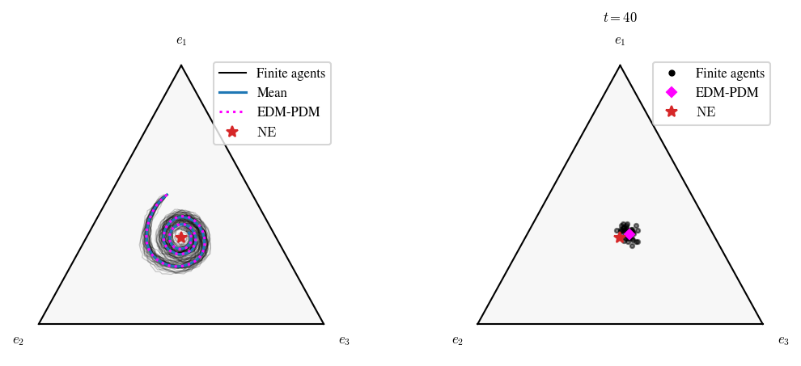
For the PD (2 strategies), "final" shows the histogram of \(x_1\) (the share of cooperators), with the
deterministic approximation (dotted) and the NE (dashed).
# Populations with 2 (or more than 3) strategies: histograms of the final states
sim_pd.reset(x0=np.array([[0.9], [0.1]]))
ens_pd = sim_pd.run_ensemble(T_sim=5, num_runs=200, seed=0)
ens_pd.plot(
plot_type="final",
t=2.0, # the states at t = 2 (default: the final time)
plot_deterministic_approximation=True,
filename=out("pd_final.png"),
show=False,
)

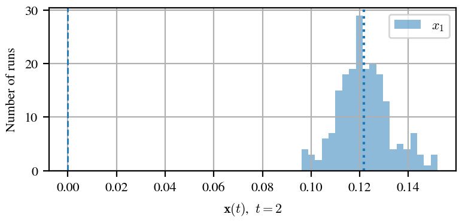
Several initial states¶
Runs with the same initial state form a group. With several groups, "ternary" is a phase portrait (one color
per initial state, which is marked), "kpi" has one band per group, and "bands" makes one figure per group (or
only for initial_state=g), unless pool_initial_states=True mixes all runs in the same bands.
# Several initial states: each one has its own color, and the initial states are marked
x0s = sample_initial_states(rps_game, num=6, seed=1)
ens_x0s = sim_rps.run_ensemble(T_sim=40, x0=np.repeat(x0s, 5, axis=0), seed=0) # 5 runs each
fig, axes = plt.subplots(1, 2, figsize=(9, 3.2), width_ratios=(1, 1.3))
ens_x0s.plot(plot_type="ternary", plot_gne=True, alpha=0.5, ax=axes[0])
ens_x0s.plot(
plot_type="bands",
variables=["x"],
pool_initial_states=True, # bands over all runs, instead of one figure per initial state
statistic="mean_std",
ax=axes[1],
)
fig.subplots_adjust(wspace=0.35)
save(fig, "rps_phase_portrait.png")
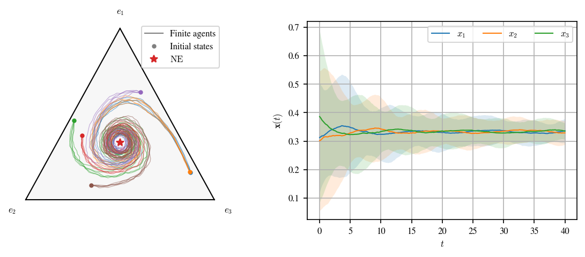
Deterministic ensembles¶
integrate_ensemble() integrates the deterministic approximation from several initial
states, e.g., to check that every trajectory converges, wherever it starts. The result is an
EnsembleResult with one run per initial state, so all plots above apply; "bands" and
"kpi" pool the initial states by default.
# The deterministic approximation (EDM-PDM) from 50 initial states
x0s = sample_initial_states(rps_game, num=50, seed=2)
ens_det = sim_rps.integrate_ensemble(T_sim=40, x0=x0s)
fig, axes = plt.subplots(1, 3, figsize=(10, 2.5), sharey=True)
ens_det.plot( # the initial states are pooled by default for deterministic ensembles
plot_type="bands",
variables=["x"],
statistic="mean_std",
layout="per_strategy",
plot_gne=True,
ax=axes,
)
save(fig, "rps_deterministic_ensemble.png")
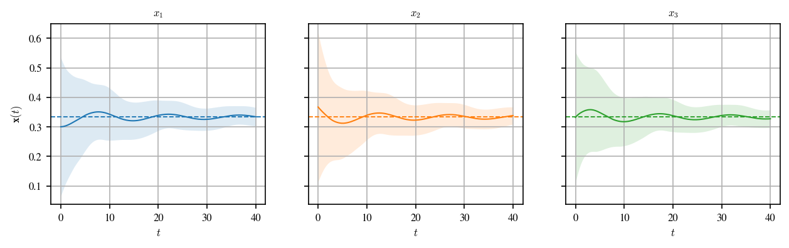
Derived quantities¶
derived plots quantities computed from the state, by name: functions mapping a run (fields t, x, q,
p) to an array of shape (m, K) (or (K,)). They are plotted after the variables, with all the options of
"bands" (variables=[] plots only them), and their statistics are computed on their values in the runs.
apply() returns them as an array of shape (runs, m, K).
Here, the product \(x_1 x_2 x_3\) is conserved by the replicator dynamics (dotted line), but the finite population drifts away from it.
# The product x_1 x_2 x_3 is conserved by the replicator dynamics, but not by a finite population
sim_rep = make_simulator(rps_game, rps_payoffs, Replicator(scale=0.5), num_agents=200)
sim_rep.reset(x0=np.array([[0.5], [0.3], [0.2]]))
ens_rep = sim_rep.run_ensemble(T_sim=60, num_runs=40, seed=0)
def product(run):
return run.x.prod(axis=0) # shape (K,): a scalar quantity
fig, ax = plt.subplots(figsize=(5, 2.5))
ens_rep.plot(
plot_type="bands",
variables=[],
derived={r"\Pi": product},
plot_deterministic_approximation=True,
ax=ax,
)
save(fig, "rps_derived_product.png")
# The same quantity as an array of shape (runs, 1, times), for further analysis
values = ens_rep.apply(product)
print(f"Runs whose product dropped by more than half: {np.mean(values[:, 0, -1] < values[:, 0, 0] / 2):.0%}")

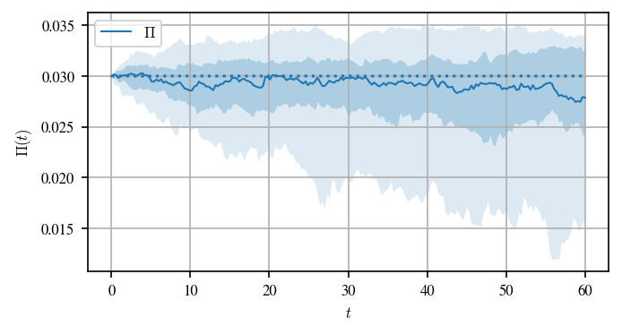
Saving figures¶
With filename, each figure is saved in the format of its extension (e.g., .pdf or .png). Plots that
create several figures append a suffix to the file name:
Plot |
File names (for |
|---|---|
|
|
|
|
|
|
multi-population |
|
ensemble |
|
ensemble |
|
For figures composed with ax, save the figure with fig.savefig(...).